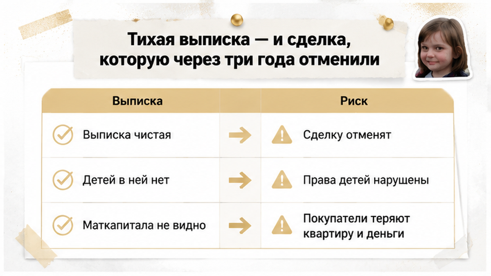
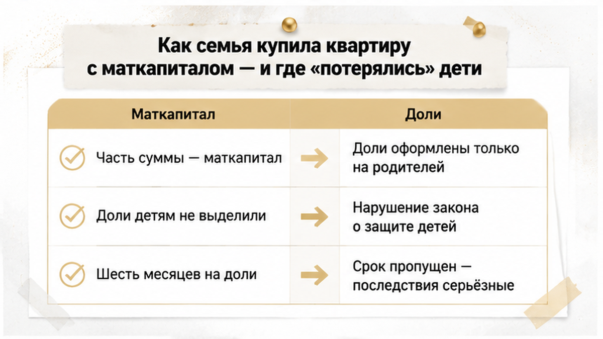
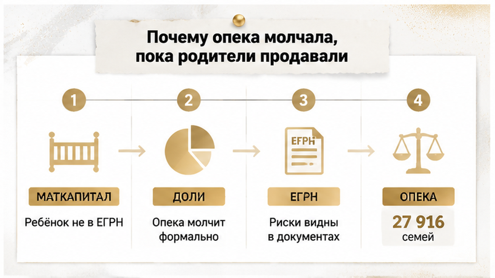
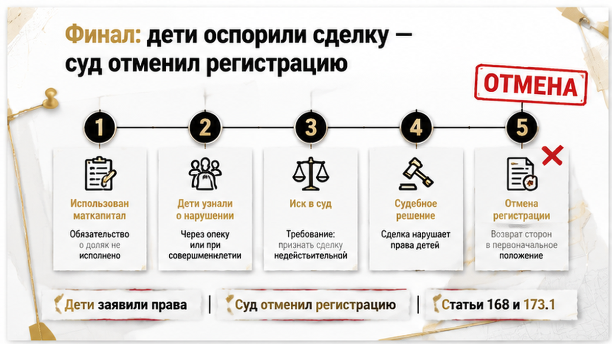
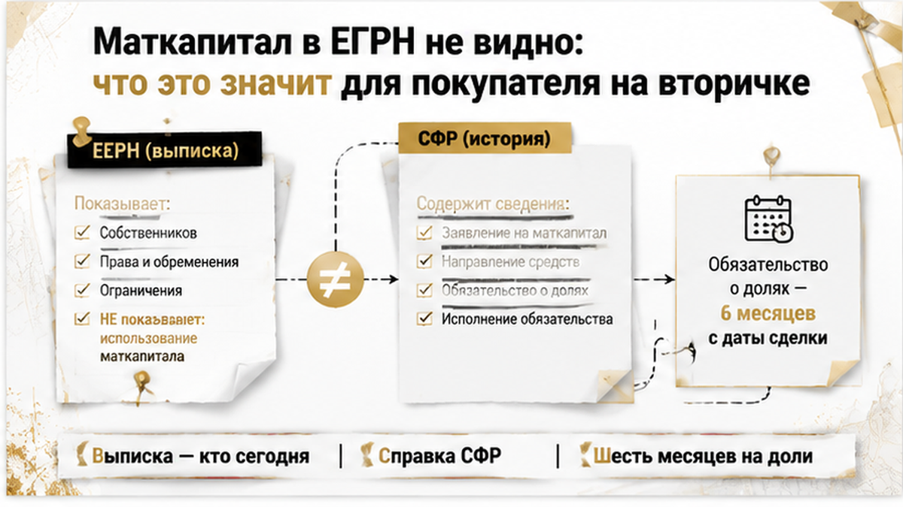
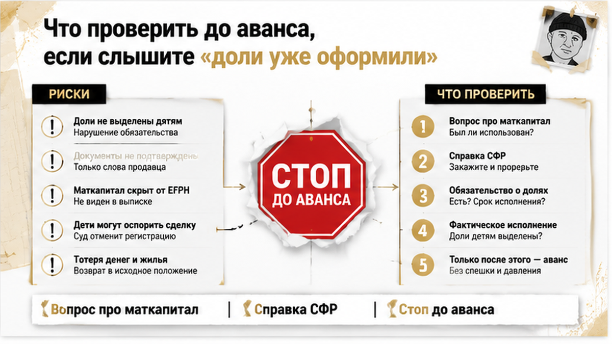

Выписка была чистая. Детей в ней не было — и покупатель прочитал это как «всё в порядке», хотя читать нужно было ровно наоборот.
История ниже — типовой механизм тюменской вторички, а не дело с номером, адресом и фамилиями: такие сделки идут потоком, и финал у них повторяется почти дословно. Несколькими годами раньше семья купила квартиру, часть суммы закрыла материнским капиталом, а доли детям так и не выделила. Покупатель заказал выписку, увидел двух взрослых собственников, услышал от продавца спокойное «доли уже оформили, в новой квартире» — и вышел на сделку. Регистрация прошла без запинки: ключи, переезд, ремонт, новая жизнь. Примерно через три года выросшие дети заявили права на жильё, купленное в том числе на их маткапитал, и суд признал сделку недействительной — регистрацию права покупателя отменили. Ни одна бумага на дату сделки против него не играла; против него сыграло то, чего в бумагах не было.
Святослав Шакин, The Риэлтор, Тюмень. Веду вторичку и проверяю объекты до аванса — пишите, если на руках выписка и обещания продавца.

Я веду вторичку в Тюмени и почти каждую неделю слышу одну и ту же фразу: «Выписку смотрели, детей нет — значит, детского риска нет». Звучит логично. Работает наоборот.
Выписка из ЕГРН — это срез зарегистрированных прав на дату запроса. Она честно отвечает на три вопроса: кто собственник сегодня, в каких долях, есть ли арест или залог. Всё. Она не рассказывает, какие обязательства собственник на себя брал и не исполнил. И в обычной выписке нет универсальной отметки о том, что квартира когда-то куплена с участием материнского капитала.
Отсюда парадокс, который и выбивает покупателя из колеи. Пустая графа с детьми означает одно из двух — и эти два состояния на бумаге выглядят абсолютно одинаково. Либо дети к этому объекту действительно никогда не имели отношения. Либо родители не выполнили обязанность выделить им доли, и в реестре просто нет следа там, где след должен был быть.
Обычный покупатель видит спокойный документ. Риэлтор в этом месте задаёт неудобный вопрос: а на какие деньги эта квартира была куплена восемь лет назад?
Разница между «детей нет» и «детей забыли» вскрывается не на сделке. Она вскрывается позже — когда ребёнок вырастает, узнаёт, что жильё покупалось в том числе на его материнский капитал, и начинает задавать вопросы уже не родителям, а суду.
Именно поэтому невыделенные детские доли — самый тихий риск на вторичке. Он не подсвечивается ни выпиской, ни справкой из управляющей компании, ни осмотром квартиры в субботу днём. Продавцы — двое взрослых, документы в порядке, цена рыночная, ремонт свежий. Сделка регистрируется без сучка и задоринки: у регистратора нет оснований её тормозить, потому что формально в ней нет ни ребёнка-собственника, ни спора. А проблема приходит через годы — и приходит не к продавцу, который давно живёт в другом районе, а к тому, кто в этой квартире делает ремонт и платит ипотеку.
И здесь сразу оговорка, без которой дальше идти нельзя. «Через три года» — обстоятельство конкретного сюжета, а не универсальный срок, после которого что-то включается или, наоборот, гаснет. Сроки исковой давности по недействительным сделкам считаются по правилам ст. 181 ГК РФ и зависят от двух вещей: от квалификации сделки и от момента, когда человек узнал или должен был узнать о нарушении своего права.
Я не пугаю. Я показываю механику: бумага, которая выглядит чистой, и объект, который чистым не является, — это не противоречие. Выписка не врёт, она просто отвечает не на тот вопрос, который вам нужен перед авансом. Про то, как «нормальная» регистрация перестаёт быть нормальной, я подробно разбирал в кейсе «Ипотеку одобрили, а регистрацию отменили»: там выписка тоже устраивала всех — ровно до того момента, пока не выяснилось, чего в ней не было.

Часть суммы закрыли материнским капиталом: где-то это первоначальный взнос, где-то погашение ипотеки, где-то деньги прямо в расчётах с продавцом. И вот с этого момента у квартиры появляется свойство, которого не видно ни на осмотре, ни в выписке. По ч. 4 ст. 10 ФЗ № 256-ФЗ жильё, купленное с использованием этих средств, оформляется в общую собственность владельца сертификата, супруга и всех детей, а размер долей определяют соглашением. Это не рекомендация и не «по желанию». Это условие, на котором государство дало деньги.
Дальше вступает п. 15(1) Правил из Постановления Правительства РФ № 862: на выделение долей есть шесть месяцев. Отсчёт — от перечисления средств продавцу, от снятия обременения с квартиры, от ввода дома в эксплуатацию: в зависимости от того, как покупали.
Вот в этой щели дети и «теряются». Ипотека длинная, обременение висит годами, шестимесячный срок привязан к событию, которое ещё даже не наступило. Семья честно откладывает вопрос «на потом». Потом — новая работа, другой район, вторая квартира, третий ребёнок. Старое жильё продают, а «потом» так и не наступает.
С 2025 года у продавцов отвалилась любимая техническая отговорка: доли в ипотечной квартире можно выделять без согласия банка. Дети становятся собственниками, квартира остаётся в залоге до погашения кредита — и всё. Для покупателя это важно ровно в одном: фраза «нам банк не разрешал» больше не объясняет, почему в реестре пусто. Проверять надо не уважительность причины, а факт — выделены доли в этой квартире или нет.
И ещё одна деталь, которая ломает логику покупателей начисто. Само выделение долей по маткапиталу не требует согласия опеки: это исполнение родительской обязанности, а не сделка с детским имуществом. То есть в объекте может не быть ни одной строчки про опеку — и при этом висеть неисполненное обязательство перед детьми. Права детей на жильё вообще умеют всплывать через годы после спокойной сделки: я показывал это на другом составе, в истории про наследство и сына от первого брака, который не отказался.

Первый вопрос, который мне задают, когда история доезжает до суда: «А где была опека, почему не остановили?»
Ответ неудобный. Опека, скорее всего, ничего не нарушила.
Она входит в сделку тогда, когда ребёнок уже числится собственником в ЕГРН. Тогда продажа возможна только с разрешения органа опеки и попечительства: там смотрят, сохраняются ли жилищные права ребёнка, равноценно ли новое жильё, не становится ли семье хуже. Механизм рабочий — но он включается от записи в реестре.
А если доли не выделены, детей в реестре нет. Для регистратора и для опеки перед ними обычная продажа квартиры двумя взрослыми собственниками. Нет детского имущества — нет предмета для разрешения. Опека молчит не потому, что закрыла глаза, а потому что формально в этой сделке ребёнка-собственника не существует. Нарушение к тому моменту уже есть, но живёт оно не в ЕГРН, а в неисполненной обязанности по маткапиталу. И всплывает позже — когда за него берутся сами дети, СФР или прокуратура, по обстоятельствам.
Поэтому самая опасная фраза в переговорах по вторичке звучит мирно: «опека сделку пропустила, значит с детьми всё чисто». Не значит. Отсутствие опеки ничего не подтверждает — это следствие того, кто записан в реестре, а не вывод о том, что детям ничего не должны.
Насколько это тюменская история, а не абстракция. За шесть лет в Тюменской области региональную выплату 150 тыс. ₽ на первого ребёнка получили 27 916 семей, а 100 тыс. ₽ на третьего и последующих — 43 257 семей; только за первое полугодие 2026-го добавились ещё 2 456 и 4 842 семьи. Это не доказывает маткапитал в конкретной квартире, которую вы смотрите в субботу. Это говорит о другом: семейных денег в жилье вокруг очень много, и шанс встретить на вторичке объект с историей господдержки у тюменского покупателя выше, чем ему кажется.

Дети растут. В какой-то момент узнают, что квартира, купленная в том числе на их материнский капитал, продана без их долей. И заявляют требования уже сами. Основания стандартные: ч. 4 ст. 10 ФЗ № 256-ФЗ плюс общие нормы о недействительности сделок — ст. 168 и 173.1 ГК РФ. Иск может подать не только ребёнок: по обстоятельствам инициаторами выступают СФР и прокуратура.
В нашем сюжете суд признал сделку недействительной, и регистрация права покупателя была отменена. Квартира вернулась прежним владельцам, а у покупателя осталось право требовать назад деньги.
Но результат в таких спорах бывает разный — и это важнее страшилки «отберут квартиру». Суд может отменить сделку целиком, тогда включается реституция. А может ограничиться частичным решением. Показательный пример из практики Челябинского областного суда: детям вернули именно невыделенные доли — 18/100, — и покупатель формально остался владельцем квартиры, только уже с детьми-совладельцами. Обещать заранее одно из двух не может ни один риэлтор и ни один юрист: исход зависит от квалификации сделки, состава требований и того, что докажут в конкретном процессе.
Обычный покупатель смотрит выписку, видит двух взрослых собственников, не видит детей — и читает это как «детского риска нет». Я на том же документе задаю другой вопрос: а почему детей нет?
Потому что вариантов два. Либо детских прав на этот объект действительно никогда не возникало. Либо обязанность выделить доли не была исполнена. Выписка эти два состояния не различает — она показывает зарегистрированное право на дату запроса и молчит об истории обязательств, которые прилипли к квартире при покупке.
Из того же корня растёт и молчание опеки. Нет записи — нет процедуры. Я не утверждаю, что опека была обязана вмешаться и не вмешалась: её участие — не индикатор чистоты объекта, а следствие того, кто внесён в ЕГРН.
Обратная оговорка не менее важна. Сама по себе выписка без детей ничего плохого не доказывает. Большинство квартир на тюменской вторичке продаются вообще без маткапитала, и трясти справками каждого продавца бессмысленно. Отсутствие детских долей становится сигналом только в связке с признаком, что средства сертификата в объекте участвовали. Тогда «чистая» бумага перестаёт быть аргументом и превращается в вопрос. Похожий разворот я описывал в кейсе, где ипотеку одобрили, а регистрацию отменили: выписка была нормальной ровно до момента, пока не выяснилось, чего в ней не было.

| Документ | Что подтверждает | Чего в нём нет |
|---|---|---|
| Выписка ЕГРН на объект | Кто собственник сегодня, доли, аресты и обременения по записи | Участия маткапитала в покупке, неисполненных обязательств по выделению долей |
| Правоустанавливающий документ продавца (ДКП, ипотечный договор) | Как и когда объект приобретён, чем оплачен по тексту договора | Гарантии, что после снятия обременения доли реально выделили |
| Справка СФР о расходовании средств сертификата | Направлялся ли маткапитал на жильё и на какое именно | Возможности запросить её покупателю — документ получает сам владелец сертификата |
| Разрешение опеки | Что продажу детской доли согласовали и жилищные права проверили | Смысла вовсе — если детей нет в ЕГРН, такого документа просто не существует |
Теперь про сроки и про «мы всё оформили». П. 15(1) Правил ПП РФ № 862 даёт шесть месяцев на выделение долей, отсчёт — от перечисления средств продавцу, снятия обременения, ввода дома в эксплуатацию. С 2025 года согласие банка для этого не нужно. То есть «банк не разрешал» пустоту в реестре больше не объясняет.
И самое частое заблуждение продавцов: обязательство привязано к тому жилью, которое куплено на средства сертификата. Обещание «выделим доли в новой квартире» не делает продажу старого объекта безопасной для вас. А поскольку выделение долей согласия опеки не требует, ссылаться на «долгие согласования» тоже нечего. Логика та же, что в кейсе, где справки были чистыми, а риск сидел в прошлом объекта.

«Доли уже оформили» — это не документ. Это обещание. До аванса я отношусь к нему именно так.
Проверять здесь нужно не наличие детей в выписке, а историю денег: вложен ли материнский капитал в этот объект и что стало с обязанностью выделить доли. Выписка про восемь лет назад не расскажет ничего. Поэтому вопрос задаю в лоб, а ответ перевожу в бумагу.
Первый вопрос продавцу: использовались ли средства сертификата при покупке этой квартиры — как первый взнос, как погашение ипотеки, в расчётах по ДДУ? Второй: если использовались, где выделены доли — здесь или «в новой»? Второй ответ важнее первого, потому что обязанность по ч. 4 ст. 10 ФЗ № 256-ФЗ привязана к купленному на эти деньги жилью, а не к тому, которое семья планирует взять когда-нибудь потом.
Дальше документальная часть. Продавец может сам запросить в СФР расширенную справку о расходовании средств: куда и когда они ушли. Абсолютной гарантии для покупателя это не даёт, но другого внятного способа увидеть происхождение денег в сделке у вас нет. Если продавец категорически отказывается такую справку запрашивать, а в семье есть дети и квартира куплена в годы активного использования сертификатов, — для меня это самостоятельное основание не спешить с авансом.
И отдельно разбираю отговорки — по датам, а не по интонации.
| Что говорит продавец | Что это может означать на практике | Чем закрываю до аванса |
|---|---|---|
| «Маткапитал не использовали» | Возможно, так и есть — но проверяется по расходованию средств, не по выписке | Прямой вопрос + справка СФР; заверение в предварительном соглашении |
| «Доли уже оформили» | Оформили — но, возможно, в другом объекте или только на словах | Смотрю, в каком объекте выделены доли, и сверяю с адресом покупаемой квартиры |
| «Опека не нужна, дети не собственники» | Формально верно — и именно это бывает индикатором невыделенных долей | Выясняю причину: маткапитала не было или обязанность не исполнена |
| «Банк не разрешил» | С 2025 года согласие банка для выделения долей не требуется | Прошу объяснить хронологию, фиксирую ответ письменно |
| «Оформим доли в новой квартире» | Обязательство связано с этим жильём, а не с будущим | Как закрытие риска не принимаю: либо доли выделяют до сделки, либо я выхожу |
И не рассчитывайте, что риск отфильтруют за вас. Ни банк, ни нотариус, ни регистратор не обязаны выяснять, откуда семья взяла деньги на квартиру много лет назад: они работают с тем, что зарегистрировано. Документы на дату сделки не спорят с историей — они её просто не показывают.
Если маткапитал был, а в выписке долей детей нет — вы останавливаете сделку или верите словам продавца «уже всё оформили»?
Если сомневаетесь в конкретной квартире — напишите до аванса, разберём хронологию по документам: Telegram или MAX.
Есть фраза, которой покупатель успокаивает себя перед сделкой: «если что-то пойдёт не так, суд всё вернёт».
Юридически всё так: недействительность ведёт к реституции. По ст. 168 и 173.1 ГК РФ сделку признают недействительной, регистрацию права покупателя отменяют, квартира уходит прежним владельцам, а деньги — покупателю. Между «суд взыскал» и «деньги на счёте» стоит одна вещь: платёжеспособность продавца. Если сумма ушла на другое жильё, на закрытие долгов или просто разошлась за три года, исполнительный лист превращается в долгую историю с приставами.
Второй сценарий — частичный. Это не «всё или ничего»: в том же деле Челябинского областного суда детям вернули их доли, 18/100, и покупатель квартиру формально сохранил — но уже как совладелец с посторонними для него людьми. Ни отмены сделки целиком, ни возврата денег. Просто в вашей квартире принудительно появляются другие собственники, с которыми теперь придётся договариваться о пользовании, продаже и любом следующем шаге.
Про механику возврата денег я уже писал в разборе, где расписку написали, а деньги на счёт так и не пришли. Вывод там ровно тот же: вернуть деньги после срыва сделки почти всегда сложнее, чем её не допустить.
Поэтому мой практический итог короткий. Риск невыделенных детских долей закрывается не в суде и не полисом. Он закрывается до аванса: вопросом про маткапитал, справкой о расходовании средств и готовностью выйти из сделки, если ответы не сходятся.
Материал проверен: Святослав Шакин, личный риэлтор в Тюмени. Ориентир для покупателя, не индивидуальная юридическая консультация.